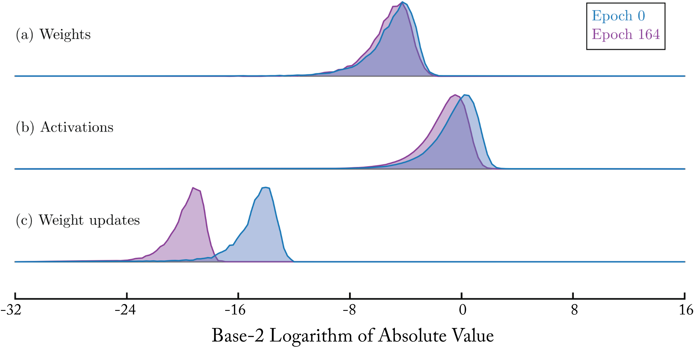
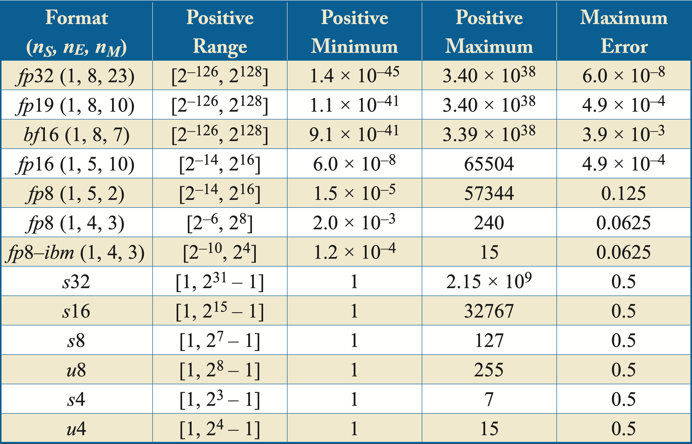
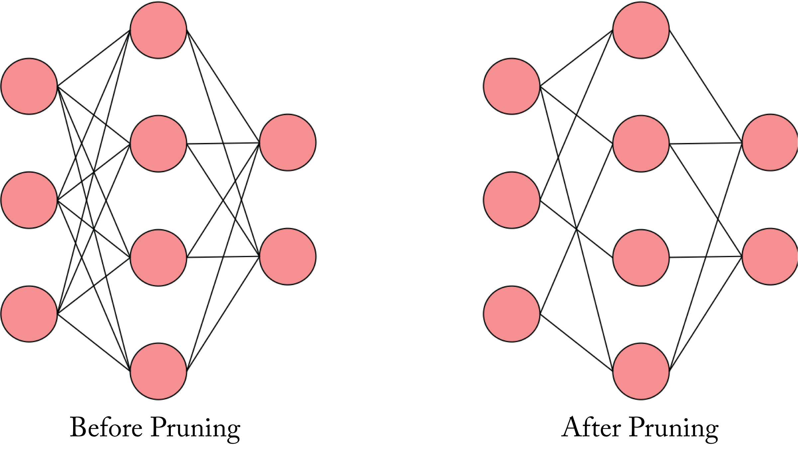
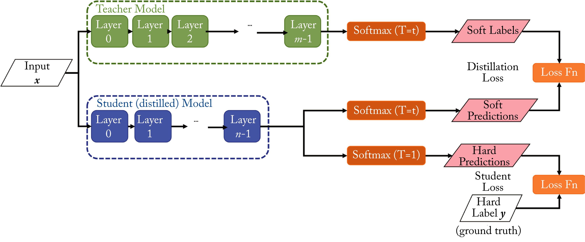

Chapter 6: Reducing the Model Size
Computers represent real numerical values as a set of binary digits or bits, usually with 8, 16, 32, or 64 bits. The more bits used, the higher the numerical range and precision or representation of the numerical value. The numerical format of a model can impact its computational and statistical performance. Using a smaller numerical representation can increase the number of operations per cycle and reduce memory, memory bandwidth, network bandwidth, and power consumption. In particular, if a workload is memory bandwidth bound (bottlenecked by the memory bandwidth), reducing the numerical representation alleviates such bottleneck and improves the computational performance. If it is compute bound (bottlenecked by the compute available), hardware designers can pack more smaller numerical format multipliers into a given die area to improve the computational performance. However, using a smaller numerical representation may result in lower statistical performance for some models.
Figure 1.17 shows various numerical formats with the respective number of sign, exponent, and mantissa bits. The exponent bits determine the range, and the mantissa bits determine the precision. For instance, \(fp32\) and \(bf16\) have the same range factor, but \(fp32\) provides higher precision.
There are four main techniques used to reduce the model size:
-
reducing the numerical representation;
-
pruning (trimming) parts of the model and compressing the pruned model;
-
distilling the knowledge to a smaller model; and
-
using NAS that rewards small models.
While most commercial applications use \(fp32\) for training and inference workloads, lower numerical formats are rapidly gaining adoption. Specifically, half-precision floating-point (\(fp16\)) and bfloat16 (\(bf16\)) for training and inference and, for a subset of workloads, \(\mathit{int8}\) for inference, all with \(32\) bits accumulation for MAC operations. Using \(bf16\) or \(fp16\) multipliers with \(fp32\) accumulators has insignificant to no loss in the accuracy for training and inference. Using \(\mathit{int8}\) multipliers with \(\mathit{int32}\) accumulators has some to minimal loss in the accuracy for some inference workloads. Note that storing the activations in a \(16\)-bit format reduces memory and bandwidth consumption by almost \(2\times\), even if the hardware does not support \(16\)-bit multiplies [Dev17].
Training requires a larger numerical representation than inference, in particular, to capture the dynamic range of the gradients and weight updates. Figure 6.1 shows the histogram of log-base \(2\) absolute values from ResNet-110 tensors across two separate training epochs and illustrates the larger range of the weight update values.
 Figure 6.1: Distributions of the ResNet-110 weights, activations, and weight updates at two separate training epochs using the CIFAR dataset. Adapted from [KWW+17] with the authors' permission.
An active research area is to develop numerical representations that better represent the values with \(8\) bits and \(4\) bits and are simple to implement in silicon. Using a smaller numerical representation can improve training and inference even if the hardware does not support higher peak operations per cycle at the smaller representation because the memory bandwidth savings accelerate memory bandwidth bound layers, which are common.
Models are typically overparameterized, which facilitates training and provides opportunities to reduce the model size post-training. Trained models typically have several small weights. Forcing them to zero can have computational advantages with minimal to no statistical impact. This process is called pruning and results in a sparse model. There are two types of model sparsity, discussed in Section 6.3, structured and unstructured.
A key benefit of sparse models is improved compression. Compression reduces the memory footprint and memory bandwidth consumption at the expense of some additional computations for decompression. The time for this additional decompression is usually less than the additional time to transmit the uncompressed data; therefore, compression is advantageous.
A small model can be trained to produce the output of a large trained model. The knowledge of the larger trained model (the teacher model) is distilled to the smaller model (the student model). This method is known as knowledge distillation.
In Section 6.1, we review the various \(16\)-bit and \(8\)-bit numerical formats adopted in production, as well as other promising formats. In Section 6.2, we discuss techniques to quantize a model from \(fp32\) to \(\mathit{int8}\). In Section 6.3, we review pruning and compression techniques. In Section 6.4, we explain knowledge distillation in more detail.
6.1 Numerical Formats
The most popular and widely adopted format is \(fp32\) for both training and inference. The industry is moving toward \(fp16\) and \(bf16\) for training and inference, and for a subset of workloads, \(\mathit{int8}\) for inference. Nvidia introduced a nonstandard \(fp19\) format (sometimes referred to as bfloat19) for matrix multiplications, which combines the range of \(bf16\) and the precision of \(fp16\). Intel and IBM explored nonstandard \(fp8\) formats. Figure 1.17 shows various numerical formats with the respective number of sign, exponent, and mantissa bits. The mantissa is also known as the significand and should not be confused with the term mantissa used in the logarithmic literature to refer to the fractional part of a logarithm.
Looking ahead for different hardware usages, the numerical formats that are or can be used across various types of development stages are:
-
topology research and topology design: \(fp32\);
-
training production models in data centers: \(fp32\), \(bf16\), \(fp16\), and \(fp19\); limited \(fp8\);
-
serving production models in data centers: \(fp16\), \(bf16\), and \(fp8\); some \(\mathit{int8}\); extremely limited \(\mathit{int4}\); and
-
serving production models in edge devices: \(fp16\) (depending on power constraints), \(\mathit{int8}\), and \(fp8\); some \(\mathit{int4}\).
DL libraries, such as TensorFlow, PyTorch, MXNet, OpenVINO, and TensorRT, support \(\mathit{int8}\), \(fp16\), \(bf16\), and \(fp32\). For other formats to gain adoption, hardware and framework support is needed.
Table 6.1 shows the range, the minimum and maximum positive values for the floating-point numbers, and the maximum numerical error across various numerical formats. \(fp8\)-\(\mathit{ibm}\) refers to an \(8\)-bit floating-point format introduced by IBM and discussed below. \(u\{4,8\}\) represents a \(\{4,8\}\)-bit unsigned integer, \(s\{4,8,16,32\}\) represents a \(\{4,8,16,32\}\)-bit signed integer, and (\(n_S,n_E,n_M\)) indicates the number of sign, exponent, and mantissa bits, respectively, of the floating-point formats. Thus, (\(1,8,23\)) indicates a format with a sign bit, \(8\) exponent bits, and \(23\) mantissa bits, which corresponds to \(fp32\). The exponent bits determine the range and the mantissa bits the precision. The maximum numerical error of a given floating-point representation is the floating-point number multiplied by
or \(0.5\) for the integer representations.
Table 6.1: A comparison of different numerical formats. The maximum numerical error of a given floating-point representation is the floating-point number multiplied by Maximun Error. 
Training a model with 16 bits (specifically \(bf16\) or \(fp16\)) usually requires the following:
-
MAC operators with \(16\)-bit operands accumulated to \(fp32\), and the accumulation is converted to \(16\)-bit after totalling the running sum (note that the hardware logic may accumulate to less-bits registers, such as (\(1,8,21\)) to reduce cost);
-
reductions (sums) accumulated to \(fp32\) and the result converted to \(16\)-bit;
-
activation functions at either \(fp32\) or \(16\)-bit;
-
activations stored in \(16\)-bit;
-
a copy of \(fp32\) weights used for the weight update (the updates use \(16\)-bit gradients); and
-
a copy of the updated weights converted to \(16\)-bit for the next iteration.
The first three bullets also apply to inference with a \(16\)-bit or \(8\)-bit format. In both cases, accumulation to a larger numerical format is recommended to avoid numerical overflow (notation: MAC source \(\rightarrow\) MAC destination): \(\{fp16, bf16\}\rightarrow fp32\), and \(\mathit{int8} \rightarrow s32\) (signed \(\mathit{int32}\)).
Floating-point \(\mathbf{16}\)-bit bfloat (\(bf16\)) was introduced by Google as brain floating-point. Models are robust to additive noise, and, in fact, it is a common practice to add noise when training a model in the form of weight decay regularization, as discussed in Section 4.1. Reducing the mantissa bits from \(23\) in \(fp32\) to \(7\) in \(bf16\) can be interpreted as injecting noise into the model. \(bf16\) maintains the same range factor as \(fp32\) and is particularly useful to support the range in the gradients. Experiments demonstrate that models trained with \(bf16\) have virtually the same accuracy as those trained with \(fp32\) with the same number of iterations, without changing any hyperparameter, and without scaling the objective function cost [KMM+19]. However, there may be outlier models where these observations are not valid. Also, when the number of classes is greater than \(2^{n_M}\) or \(127\), \(fp32\) should be used for the cost function. Moreover, while softmax alone can use \(bf16\), various implementations combine the softmax function and the cost function. Those implementations should use \(fp32\).
While \(bf16\) was primarily designed for training (the large exponent to represent the gradients), it is also used for inference with similar computational gains over \(fp32\). Google TPU v2-4, the Habana Gaudi AI processor, the 3rd-generation Intel Xeon Scalable processor (codename Cooper Lake), the Arm-based Neoverse N2 "Zeus" CPU, and the Nvidia A100 GPU have \(bf16\) multipliers.
Floating-point \(\mathbf{16}\)-bit half-precision (\(fp16\)) is used for inference and training, the latter often requiring a technique known as loss-scaling. During training, particularly during the early stages, the magnitude of many activation gradients often falls below the supported range of \(fp16\) and gets truncated to zero and the upper range of \(fp16\) is unutilized. Scaling the loss (more precisely, the cost or objective function), mitigates this inability to represent very small values and enables the use of the higher range. Specifically, the cost is scaled by a value \(\gg 1\) without overflowing the activation gradients past the upper \(fp16\) range. Then, unscaling the weight gradients by the same factor before the weight update. In addition, normalizing \(0\)-\(255\) RGB input image value to \(0\)-\(1\) and adding batch normalization to the activation reduces overflow risks [Wu19]. Nvidia GPUs, AMD Radeon GPUs, Huawei Atlas and Ascend processors, and Graphcore Colossus have \(fp16\) multipliers.
The primary advantage of \(bf16\) over \(fp16\) is avoiding the need to implement loss-scaling, which requires empirical tuning. This advantage is particularly significant for models requiring dynamic loss scaling (and dynamic tuning) such as GNMT and Transformer, given the large variations in gradient distribution throughout training, which increases the software complexity [MSD+19]. Some tools, such as OpenSeq2Seq, can automate dynamic loss scaling for some models [KGG+18].
A disadvantage of \(bf16\) over \(fp16\) is the \(3\) fewer mantissa bits; there may be some precision-sensitive workloads that benefit from those bits. The upper range values of \(bf16\) are not used, bringing to question the need for \(8\) exponent bits for most training workloads. Facebook, for instance, uses \(fp16\) (rather than \(bf16\)) to store the embedding layers (not for MAC operators) in DLRM training (the MAC operators of the embedding layers happen in \(fp32\)) [ZYY18]. In designing a training processor, it is recommended to support both \(fp16\) and \(bf16\) (using a \(19\)-bit (\(1,8,10\)) \(fp19\) floating-point circuitry unit) to facilitate transitioning from existing hardware that only support one format (\(fp16\) or \(bf16\)).
TensorFloat-32 with \(\mathbf{19}\)-bit floats (\(tf32\)) was introduced by Nvidia starting in the Ampere architecture. TensorFloat-32 uses \(fp19\) MACs with \(fp32\) accumulation. All the operations and storage happen in \(fp32\) except for the MAC operations used in matrix multiplications. Those \(fp32\) MACs are replaced with \(fp19\) MACs and accelerated with specialized tensor cores. This replacement can be hidden to the framework end-user, where everything seems to run in \(fp32\). The \(fp32\) to \(fp19\) conversions (truncating the last \(13\) mantissa bits) and the \(fp19\) MACs are managed by the CUDA compiler and hidden by low-level libraries, such as cuDNN and cuBLAS. The accuracy of \(fp19\) MACs is not guaranteed to be the same as \(fp32\) MACs. However, empirical evidence using \(bf16\) (which carries to \(fp19\)) suggests that for DL workloads, the accuracy difference is insignificant; although unknown outliers may exist [KMM+19].
The primary advantage of \(tf32\) is the ease-of-adoption. It requires no changes in the DL libraries (except for an enablement flag) and works out-of-the-box. The disadvantage is the lack of memory or bandwidth savings compared to \(16\)-bit formats, which is often the bigger bottleneck.
Integer-\(\mathbf{16}\) (\(\mathit{int16}\)) training has been demonstrated on some models with no hyperparameters tuning [KWW+17; DMM+18]. The distribution of the weights, activations, weight gradients, and activation gradients in a tensor can be represented using \(\mathit{int16}\) and one shared scalar for the entire tensor. This scalar is dynamically adjusted to maximize range and minimize overflow. The weight and activation distributions do not change rapidly in consecutive training iterations. The gradient distribution changes more rapidly. A program can monitor the distributions and adjust the exponents for each tensor as needed.
For training, \(\mathit{int16}\) is not used in production; \(bf16\) and \(fp16\) are preferred over \(\mathit{int16}\) given the added complexity to manage the shared exponent with \(\mathit{int16}\), particularly for the gradient tensors. For inference, \(\mathit{int16}\) has some adoption. Habana Goya uses \(\mathit{int16}\) for workloads that required more precision than \(\mathit{int8}\) (Habana Goya also supports other formats) [Hab19].
Integer-\(\mathbf{8}\) (\(\mathit{int8}\)) is rapidly gaining adoption for some inference workloads. Using \(\mathit{int8}\) often reduces the statistical performance due to the information loss quantizing from \(32\)-bit to \(8\)-bit. For some applications, a small drop in statistical performance is unacceptable, as it can have a negative monetary impact. In particular, less relevant product recommendation results in reduced purchases. There are techniques to reduce the statistical loss discussed in Section 6.2. Note that training with \(\mathit{int8}\) is limited to academic research on a few simple models not relevant in industry.
There are two main challenges with most \(\mathit{int8}\) quantization techniques. First, the uniform distribution of \(\mathit{int8}\) does not allow finer-granularity to better represent values in high-density regions where most of the information exists. A better approach is to use a nonuniform numerical format with high granularity in high-density regions and low granularity in low-density regions. This reduces the \(32\)- to \(8\)-bit information loss. Some proposals, such as \(fp8\), are discussed below.
Second, precomputing the activations' quantization factors is needed to maximize the computational benefits of \(\mathit{int8}\) but requires additional effort for the developer. The distribution of the activation values with production data can be estimated using data samples with similar characteristics as the production data. This requires that a developer quantizing a model has access to production-like data samples.
Despite these challenges, \(\mathit{int8}\) is supported by all prevalent hardware marketed for inference. Google uses \(\mathit{int8}\) in production on TPUs for some MLP-, CNN-, and LSTM-based models, and on the Google Pixel phone for speech recognition with RNN models. Facebook (as well as many other companies) also uses \(\mathit{int8}\) across various workloads [JYP+17; HSP+19; PNB+18]. Facebook also demonstrated quantization to \(4\) bits on the embedding layers for serving recommendations without affecting statistical performance.
In particular \(\mathit{int8}\) inference has been shown to work across various CNN models [GMY+19]. However, even some CNN models like MobileNet and ResNeXt, and various non-CNNs such as BERT, are more susceptible to information loss from quantization and require additional effort to achieve acceptable statistical performance [SDY+19]. While the acceptable degradation varies, for most companies degradation over \(1\%\) is unacceptable, under \(0.5\%\) is acceptable, and in between depends on the application. Recommenders have a stricter threshold in the order of 0.01% due to the monetization impact.
Floating-point \(8\)-bit (\(fp8\)) is used by Microsoft in FPGAs (Microsoft also uses \(fp9\)) using either \(2\) or \(3\) mantissa bits. \(fp8\) is implemented by researchers in some ASICs, such as the deep-learning neural processing unit (LNPU) to demonstrate training models on mobile devices (LNPU uses \(fp8\) and \(fp16\) mixed precision training) [CFO+18; LLH+19]. Intel and IBM demonstrate that \(fp8\) multiplies (accumulated to \(fp32\) and \(fp16\), respectively) can be used for training and inference with insignificant loss in performance for various workloads [CBG+20; MSD+19; SCC+19].
There is no standardized \(fp8\) format. The most common formats are (\(1,5,2\)) and (\(1,4,3\)). The (\(1,5,2\)) format better represents the dynamic range of the gradients. A particular challenge in training with an \(8\)-bit format is in RNNs and models without normalization layers, as they are more susceptible to errors. The gradient errors can quickly increase in RNNs, and the typical lack of normalization can result in irregular tensor value distributions.
IBM proposed a hybrid (\(1,4,3\)) and (\(1,5,2\)) approach for the forward and backpropagation, respectively, using loss-scaling and stochastic rounding, and keeping the input and last layers at \(fp16\) [SCC+19]. The (\(1,4,3\)) format is modified using a \(-4\) fixed exponent bias to shift the coverage range by \(2^{-4}\) to better align with the distribution of the weights and activations. This format is referred to as \(fp8\)-\(\mathit{ibm}\) in Table 6.1. There are two primary challenges to this format. First, some models, such as GNMT and Transfomer, require dynamic loss to properly converge, which increases the software complexity. Second, the more limited representation of small values, compared to \(fp16\) (the smallest positive values are \(1.5\times 10^{-5}\) in (\(1,5,2\)) vs. \(6.0\times 10^{-8}\) in (\(1,5,10\)), often results in underflow.
Intel has proposed two methods, both using the (\(1,5,2\)) format. One method uses a shift and scale (shifted and squeezed FP8 (S2FP8)) parameter per tensor to represent a broad set of values. S2FP8 alleviates the need for loss-scaling, stochastic rounding, and \(fp32\) for the first and last layer. The main weights and accumulations are in \(fp32\) [CBG+20]. However, S2FP8 requires tracking the statistics in the tensor distribution (similar to \(\mathit{int16}\) training) and updating the shift and scale parameters which increases the software complexity.
The other method uses enhanced loss scaling to improve the range of values and reduce the common underflow observed with \(fp8\) training. This method uses loss scaling with a dynamically increasing minimum threshold for the scaling factor. Using a minimum threshold ignores spurious overflows in order to maintain a higher loss scale value. However, this method requires observing the training cost to determine when to adjust this threshold value.
A significant advantage of \(fp8\) over \(\mathit{int8}\) inference is circumventing the complexities of quantization. The current disadvantage is the limited hardware and software supporting \(fp8\) formats. A minor disadvantage is that NaNs are overrepresented and consume \(6\) out of \(256\) (\(2\%\)) and \(14\) out of \(256\) (\(6\%\)) values in the (\(1,5,2\)) and (\(1,4,3\)) formats, respectively.
The published \(fp8\) empirical results suggest that for the backpropagation (\(1,5,2\)) is preferred over (\(1,4,3\)). For inference (forward propagation), IBM demonstrated superior statistical performance using (\(1,4,3\)) with the exponent shift, albeit the results are primarily targeting convolutional models. Intel demonstrated (\(1,5,2\)) for both forward and backpropagation across ResNet, GNMT, Transformer, and NCF. The published results suggest that CNN models can benefit more from the additional mantissa bit in (\(1,4,3\)), and non-CNN models can benefit more from the additional exponent bit in (\(1,5,2\)). Nevertheless, the number of models in these studies is relatively small, and making solid conclusions requires further work.
Integer-\(\mathbf{4}\) (\(\mathit{int4}\)) support is available in recent Nvidia GPUs. \(\mathit{int4}\) inference adoption on some CNN models may slowly grow on edge devices, such as in mobile phones, where power and memory are limited. The adoption in data centers may likely be none to very limited for workloads tolerant to extremely low range and precision and limited to representing activations from ReLU functions with unsigned \(\mathit{int4}\) (the weights kept at \(\mathit{int8}\)). There is ongoing research toward improving \(\mathit{int4}\) quantization [CWV+18; Don19; GMY+19].
Floating-point \(\mathbf{24}\)-bit (\(fp24\)) (\(1,8,15\)) is used by Alibaba Neural Processing Unit (NPU) for CNN models for the element-wise and reduction operators (the matrix-wise operators use \(\mathit{int8}\rightarrow \mathit{int16}\)) [JHJ+20].
Posit is a relatively new format different from the IEEE floating standard. This format requires less power and die area than the IEEE floating-point counterpart [Gus17; Joh18]. It does not overrepresent NaNs and provides other benefits and drawbacks [dDF+19]. However, this format has minimal adoption in academia and none in industry.
Log-domain is another form of nonlinear quantization that has been shown to maintain statistical performance with smaller numerical formats [LMC+17]. This format has limited adoption in academia and none in industry.
Binary (\(1\) bit) and ternary (\(2\) bits to represent \(-1\), \(0\), and \(1\)) have been used in research, in particular, to represent the weights in a forward propagation passes [ROR+16; HS14].
6.1.1 Die Cost
The die cost to build a multiplier, and the power cost to use the multiplier both exhibit quadratic growth with the number of mantissa bits and increase linearly with the number of exponent bits. Therefore, a \(bf16\) multiplier is less expensive than a \(fp16\) multiplier. However, area costs continue to decrease rapidly, and therefore this difference should not be a major factor in the DL hardware design decisions. Usability and software development costs are much more critical factors.
To facilitate transitioning from hardware that only support one format (\(fp16\) or \(bf16\)), we recommend designing hardware that supports both \(bf16\) and \(fp16\) formats using a \(19\)-bit (\(1,8,10\)) floating-point unit (FPU). Similarly, we recommend supporting both (\(1,5,2\)) and (\(1,4,3\)) \(fp8\) formats using a 9-bit (\(1,5,3\)) FPU. According to IBM, supporting both formats only requires a \(5\%\) larger unit than supporting one format [SCC+19].
6.2 Quantization Methodology
Using \(\mathit{int8}\) can improve the computational performance at the expense of some (1) additional development and (2) loss in statistical performance. In this section, we explain the quantization methodology and share techniques that can mitigate loss in statistical performance and reduce the development process.
Assuming an \(fp32\), \(fp16\), or \(bf16\), trained model a simple technique to quantize to \(\mathit{int8}\) is as follows: For each weight tensor, the maximum absolute value is mapped to \(\pm 127\). For the activation tensors, a representative sample of the production data, called the calibration dataset, is used to collect activations statistics to find the distribution of activation values in each tensor across the samples. The quantization factor is:
where \(T_{\mathbf{a}, \mathbf{w}}\) is a tensor corresponding to either the weights \(\mathbf{w}\) or the activations \(\mathbf{a}\) (recall that the inputs to the NN can be considered the activations of Layer \(0\)). The quantized values are:
where the function \(\Phi(\cdot)\) rounds to the nearest integer.
The following techniques can improve \(\mathit{int8}\) inference accuracy. Note that even with these techniques, the loss over \(fp32\) accuracy may still be unacceptable for some applications.
Asymmetric quantization uses a scalar and a shift factor, which can improve the quantization of the activations. Note that the weights are typically approximately zero-mean and should use symmetric quantization. The minimum activation value gets mapped to \(-128\) and the maximum value to \(127\).
Threshold calibration requires deployment-like data (unlabeled data is OK) and no additional backpropagation. Mapping the largest absolute value to \(\pm 127\) (or in asymmetric quantization the minimum and maximum value to \(-128\) and \(127\), respectively) may result in poor utilization of the available \(256\) \(\mathit{int8}\) values when an outlier number is much larger than the other numbers. To illustrate, suppose the largest number is \(10\times\) larger than the next largest value. That one number gets mapped to \(127\), and the rest of the values can only map to \([-13,13]\). It is better to ignore outliers and find a threshold that minimizes the reconstruction error back to \(fp32\). Another approach that works for some CNN models is to truncate outliers to minimize the information loss measured by the KL-divergence between the larger numerical representation tensor distribution and the quantized tensor distribution [Mig17]. Note that KL-divergence minimizes a metric of error in a layer, which may not minimize the accuracy error in the entire model. In practice, just using a threshold that captures \(99\%\) or \(99.9\%\) of the values results in superior performance accuracy.
Quantization aware training (QAT) requires labeled data (training data) and backpropagation. QAT (as opposed to post-training quantization) fine-tunes a model while enforcing quantization, and has been shown to improve accuracy. At each training iteration, the weights and activations of the layers targeted for quantization are fake-quantized to mimic \(\mathit{int8}\) values. The cost used in the backpropagation is based on the quantized values. The gradients and the weights updates are computed in single-precision. Another advantage is that QAT eliminates the need for the threshold calibration step as QAT minimizes the reconstruction error of the quantized values.
Selective quantization requires labeled data but no backpropagation. Some layers, such as softmax, tanh, sigmoid, depthwise-separable convolution, GELU, and the input and output layers, are more sensitive to quantization and should be kept at the larger numerical format to reduce the accuracy loss [Wu19]. The sensitivity of softmax can be slightly reduced by accumulating the logits in the larger numerical format and subtracting the max value before quantizing [BHH20]. The activation output of GELU can be clipped, for instance, to \(10\), in order to allow some \(\mathit{int8}\) value to represent the GELU negative activation values.
Analyzing an approximation of the Hessian matrix's trace is recommended to assess the sensitivity of a layer. This technique can be used to reduce the numerical format to \(4\) bits for some layers with minimal accuracy loss [DYC+19]. Other less reliable but faster-to-compute metrics to assess sensitivity are the KL-divergence, and the root mean squared error (RMSE) with the reconstructed \(fp32\) model. RL can facilitate designing a quantized model optimized for latency, energy, and accuracy for a particular hardware target. A possible algorithm for selective quantization follows:
Quantize all the layers and approximate the average Hessian trace for each layer [DYC+19]\ Set the maximum acceptable accuracy error \(E\)\ [[alg:quantization]]{#alg:quantization label="alg:quantization"}
This algorithm determines the layers that can be quantized. Note that one challenge is that interleaving layers with large and small numerical formats may result in higher computational cost from the overhead of the many conversions.
Cross-layer range equalization is a data-free quantization (requires no data and no backpropagation). The range of weights across the layers is equalized, and the range of activations are constraint under the assumption that a piece-wise linear activation function (such as ReLU) is used between the layers [NvB+19]. This constraint is satisfied by many CNN models but not by non-CNN models. This technique is used in the Qualcomm Neural Processing SDK.
Channel-wise quantization uses a quantization factor for each channel rather than one factor for the entire tensor.
Stochastic rounding (rather than nearest-value rounding) after multiplying by the quantization factor can improve performance [WCB+18]. To illustrate, rather than rounding the number \(1.2\) to the number \(1\), it is rounded to \(1\) with \(80\%\) probability and to \(2\) with \(20\%\) probability.
Unsigned \(\mathit{int8}\) ReLU activations uses the unsigned \(\mathit{int8}\) representation, rather than signed \(\mathit{int8}\), for the activations of the ReLU functions. Using signed \(\mathit{int8}\) wastes half of the values since all the activations are nonnegative.
The techniques QAT, selective quantization, channel-wise quantization, and stochastic rounding also benefit \(fp8\) [CBG+20].
6.3 Pruning and Compression
Trained models typically have several weights that are approximately zero. Pruning them, that is, forcing all the weights less than some small \(\epsilon\) value to zero results in a sparse model. Selecting a good value for \(\epsilon\) requires experimentation. Pruning has been used for several decades to reduce the size of models. An interesting (but likely just coincidental) side note is that pruning biological neurons is important for healthy development [Iva71; LDS89; JS18; Wal13]. While pruning can reduce the number of operations using sparse operators, the primary benefit of pruning is to reduce the memory footprint via compression and alleviate memory bandwidth constraints. Note that AutoML, discussed in Section 10.1, can be used to learn a compact topology [HLL+19].
Doing some pruning usually has minimal impact on statistical performance, depending on the amount of pruning. In some cases, it may improve performance as pruning is a form of regularization. The ability to prune a model without affecting the statistical performance means the model is overparameterized. A hypothesis is that overparameterized models are needed to better explore the solution space and find a flatter minimum. After training the model, many of those parameters are no longer needed. A related hypothesis is the Lottery Ticket: within a large model there exist smaller models (lottery winners) that have the same or better performance as the larger model [FC19].
There are two types of model sparsity: structured and unstructured. Structured sparsity learning (SSL) prunes an entire vector, array, or tensor. SSL reduces the overall number of parameters and computations; for instance, by removing a convolutional filter [MHP+17]. Various SSL techniques have been developed [WWW+16; HGD+17; ZTZ+18; ZDH19; HZS+19; LSZ+19]. On CPUs and GPUs, structured sparsity (unlike unstructured sparsity) can reduce the number of operations.
Unstructured sparsity prunes values throughout a tensor without affecting the overall structure of the tensor, as shown in Figure 6.2. The unstructured sparse pruned model can take advantage of BLAS functions in the Nvidia cuSPARSE and Intel oneMKL libraries when the sparsity is greater than \(90\%\). However, most sparse models have insufficient sparsity to significantly benefit from the sparse GEMM functions in these libraries. Alternatively, Google, DeepMind, and Stanford developed techniques that achieve \(1.2\times-2.1\times\) speedups and up to \(12.8\times\) memory savings on Nvidia V100 GPUs without sacrificing accuracy on moderately sparse Transformer and MobileNet models [GZY+20].
Most production hardware are designed for dense matrix operations. Hardware with support for sparse operands is limited; one example is the LNPU device [LLH+19]. Nvidia A100 GPUs have support for fine-grained structure sparsity with \(2\times\) more compute.
 Figure 6.2: Pruning a model by removing the weights (links) closed to zero.
The techniques for pruning are:
-
train with larger weight decay to force more weights near zero;
-
fine-tune the pruned model (requires labeled data and backpropagation) [HPN+17]; and
-
prune throughout the training process: set the small weights to zero at each training iteration [LCZ+19].
For power-constrained edge devices, energy aware pruning may be required; that is, pruning the layers that consume the most energy [YCS17].
Pruned models are less robust to adversarial attacks. An adversarial attack occurs when the input to the NN is meticulously altered so that a human would not detect the change, but the model produces a very different output. For instance, the model predicts with high confidence that the imperceivable altered image of a bus is an ostrich. Adversarially Trained Model Compression (ATMC) and Defensive Quantization are techniques that provide a balance between pruning and ensuring robustness to these attacks [GWY+19; LGH19].
Model compression reduces memory and bandwidth requirements at the expense of some additional computations for decompression. The time for these additional computations is often small relative to the time saved from the reduced bandwidth constraints. Therefore, compressing is usually advantageous. Note that an uncompressed unstructured sparse model and a dense model have the same memory footprint because storing an uncompressed zero-value requires the same number of bits as any other value. Compression algorithms, such as Huffman coding, use \(1\) bit to encode common values, such as the zero value. Another technique is to cluster similar values and to quantize them to few bits, each group having a quantization factor [HKK16].
Models with ReLU functions have sparse activations, and that sparsity grows for activations deeper into the model. During the forward propagation training stage, compressing the sparse activations before storing them (to use for the backpropagation stage) alleviates bandwidth bottlenecks.
6.4 Knowledge Distillation
Knowledge distillation (KD) is a model compression technique that builds on the work by Bucila et al. and is gaining rapid adoption [HVD15; BCN06]. KD reduces the memory and computational requirements for a particular task and does not require a decompression step. KD is related to transfer learning. The knowledge from a complex model (the teacher model) is distilled to a simpler model (the student model). The student model is trained using a smaller dataset and a larger LR than was used on the teacher model.
The trained teacher model generates softened probability outputs on the student's training dataset. The student model is trained to produce similar outputs as the teacher's softened probability output, as illustrated in Figure 6.3. A softened softmax, also called a softmax temperature, first divides the logits by some value \(T>1\) (called the temperature) before normalizing them. The output is a softened probability distribution that better captures class similarities. To illustrate, the softened output in digit classification for an input image with the number \(7\) should have the highest value for \(7\) and also a relatively high value for digits that look like \(7\), such as the handwritten digit \(1\) and \(9\). The student model is trained to learn (1) the softened output using a softmax temperature and (2) the one-hot ground truth vector using the regular softmax. The softmax temperature also provides regularization to the model [YTL+19].
 Figure 6.3: Knowledge distillation. A large teacher model distills the knowledge to a smaller student model. The student model learns using both the regular softmax and a softened softmax from the teacher model. Based on [Int18].
The intuition behind KD is that the teacher model requires a more complex model to learn the relationships between the various classes. The ground truth one-hot vector does not encode class similarities and treats each class as entirely independent. The teacher model provides the class relations to the student model. Thus, the student model does not need to learn them from scratch and can use a simpler topology.
Extensions to this work are the deep mutual learning (DML) where an ensemble of students collaboratively learn and teach others by sharing their softmax outputs, and the teacher assistant (TA) to distill the knowledge from the larger-size teacher model to an intermediate-size TA model to a smaller-size student model [ZXH+17; MFL+19].
In this chapter, we detailed the various numerical formats used in production and those in exploration by researchers as well as compression techniques to reduce the memory footprint of models. Using a smaller numerical representation can increase the number of operations per cycle, and reduce the memory, memory bandwidth, network bandwidth, and power consumption. However, it may also result in lower statistical performance, particularly for some \(\mathit{int8}\) models. We discussed advances in quantization techniques to mitigate this accuracy loss and find Hessian-based analysis as a promising path to determine which layers are quantizable. Hardware support across numerical formats is one of the vital hardware design decisions. We recommend that training processors primarily support both \(bf16\) and \(fp16\) given the small die cost over supporting just one, and some \(fp32\), and inference processors primarily support \(fp16\), \(bf16\) for compatibility with the training format, \(\mathit{int8}\) and \(fp8\) and some \(fp32\). In the next chapter, we review the basics of computer architecture, and discuss the various DL hardware designs.